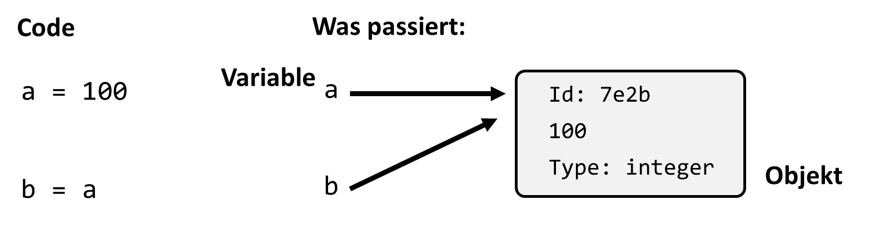
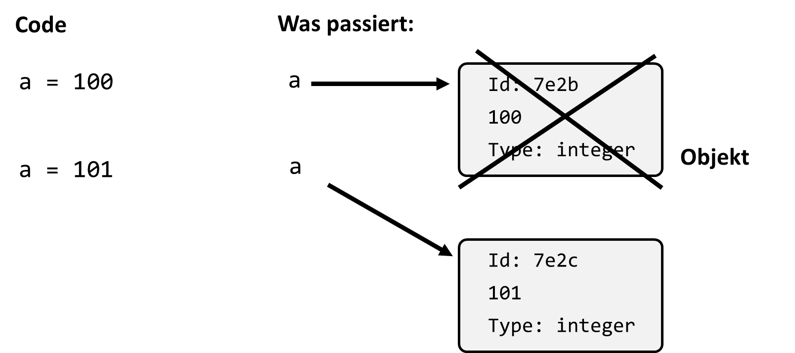
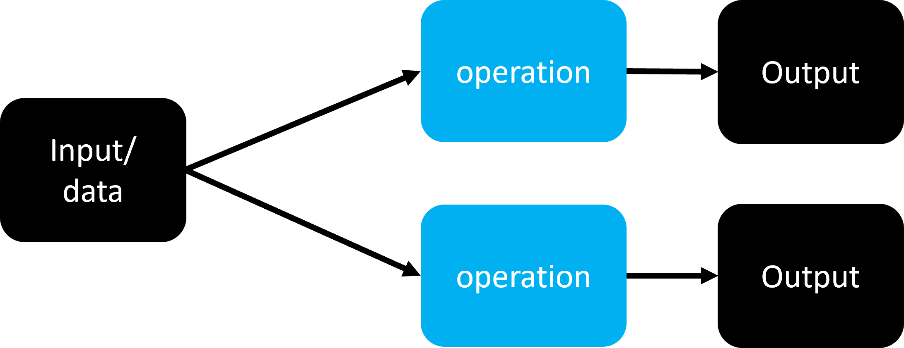
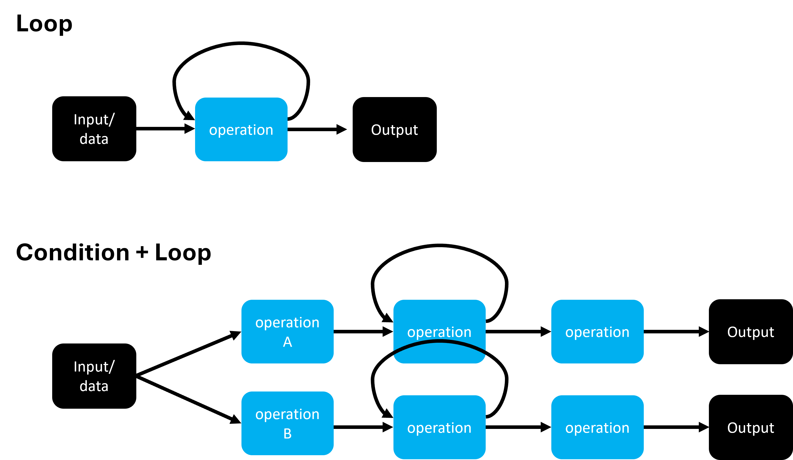

5. Kontrollstrukturen und Bedingungen#
5.1. Skripte und Programme#
Beim Programmieren haben wir es häufig mit mehreren Befehlen zu tun, die aufeinander folgen und zusammen ausgeführt werden. Wenn mehrere solche Befehle untereinander geschrieben und z.B. in VS Code ausgeführt werden, sprechen wir von einem Skript oder einem Programm.
5.1.1. Unterschied zwischen Skript und Programm#
Die Begriffe Skript und Programm werden oft synonym verwendet, jedoch gibt es einen feinen Unterschied:
Skript: Ein einfaches, meist kürzeres Stück Code, das eine spezifische Aufgabe erfüllt. Es wird oft für kleinere, temporäre Aufgaben genutzt.
Programm: Ein größeres und komplexeres Softwareprodukt mit umfangreicheren Funktionen und Strukturen.
In diesem Kurs verwenden wir die Begriffe weitgehend gleichbedeutend.
Programm \(\approx\) Skript (und Programm > Skript)
Beispiel für ein kleines Skript:
fruit = ["apple", "orange", "banana", "pear"]
juice_choice = 1
ice_choice = 2
print(fruit[juice_choice] + " juice") # oder: print(f"{fruit[juice_choice]} juice")
print(fruit[ice_choice] + " ice cream")
Mini Quiz
Was gibt dieses Skript aus?
apple juice, orange ice cream
orange juice, banana ice cream
banana juice, orange ice cream
Keine Ahnung! Ich müsste raten (will aber nicht)
Mhh. Ziemlich langweiliges Programm. Darum fügen wir als nächsten Schritt Benutzerinput hinzu:
5.1.2. Benutzerinput#
Ein häufiges Merkmal interaktiver Programme ist die Möglichkeit, Benutzereingaben zu verarbeiten. In Python nutzen wir hierfür die Funktion input():
my_str = input("String-Eingabe: ")
print(my_str) # => gibt den eingegebenen String aus
Damit können wir unser vorheriges Früchte-Skript interaktiver gestalten:
fruit = ["apple", "orange", "banana", "pear"]
print(f"We have: {fruit}")
fruit_choice = input("Please enter your choice: ")
print(f"Here is your {fruit_choice} ice cream!")
5.1.3. Quiz:#
Aber was passiert wenn ich „Ketchup“ eingebe?
a) Here is your Ketchup ice cream!
b) ValueError
c) We have no Ketchup ice cream!
Das führt uns direkt zur Frage:
Wie überprüfen wir ob es unsere Wahl überhaupt gibt?
Bei den Sequenzen hatten wir schon kurz die Abfrage xxx in my_list
Das ist bereits eine Bedingung und die werden in Python auf verschiedene Arten abgefragt:
5.2. Bedingungen#
Bedingungen sind eine zentrale Komponente in fast jedem Programm, da sie es uns ermöglichen, Entscheidungen basierend auf dem Zustand von Daten zu treffen. Eine Bedingung ist dabei eine einfache logische Aussage, die entweder wahr (True) oder falsch (False) ist.
5.2.1. Vergleichsoperationen#
In Python können verschiedene Vergleichsoperatoren verwendet werden, um Bedingungen zu formulieren:
9 < 10 # => True
print(3 < 4 < 5) # => True
print(4.0 == 4) # => True
print(4.01 == 4) # => False
"apple" < "banana" # => True (durch die Reihenfolge im Alphabet sagt Python: a < b)
"apple" != "pear" # => True
5.2.2. Unterschied zwischen is und ==#
Ein häufiger Anfängerfehler ist die Verwechslung zwischen is und ==. Beide Operatoren haben unterschiedliche Aufgaben:
==prüft, ob zwei Objekte den gleichen Wert/Inhalt haben.isprüft, ob zwei Namen auf dasselbe Objekt verweisen (Objektidentität).
Mit Listen lässt sich der Unterschied zuverlässig zeigen:
a = [1, 2, 3]
b = [1, 2, 3]
print(a == b) # => True: gleicher Inhalt
print(a is b) # => False: zwei verschiedene Listen
Wenn wir dagegen dieselbe Liste unter zwei Namen referenzieren, ist auch is wahr:
a = [1, 2, 3]
b = a
print(a == b) # => True
print(a is b) # => True

Mit id() können wir die Identität eines Objekts als Integerwert sichtbar machen. In CPython hängt dieser Wert häufig mit der Speicheradresse zusammen, darauf sollte sich Programmcode aber nicht verlassen.
a = [1, 2, 3]
b = a
print(id(a) == id(b)) # => True
In der Praxis verwenden wir is nur selten für normale Wertvergleiche. Ein sehr typischer Anwendungsfall ist dagegen None:
result = None
print(result is None) # => True
Bei Zahlen oder Strings sollte für Wertvergleiche == statt is verwendet werden. Python darf bestimmte unveränderbare Objekte intern wiederverwenden; deshalb können is-Experimente mit kleinen Zahlen oder Strings je nach Situation überraschende Ergebnisse liefern.
5.2.3. Veränderbare und unveränderbare Datentypen#
Damit hängt eine weitere wichtige Unterscheidung zusammen: Manche Objekte sind veränderbar (mutable), andere unveränderbar (immutable).
Veränderbare Datentypen wie Listen können nachträglich verändert werden:
fruits = ["apple", "banana", "mango"]
fruits[-1] = "orange"
print(fruits) # => ['apple', 'banana', 'orange']
Bei unveränderbaren Datentypen wie Zahlen, Strings und Tupeln kann das bestehende Objekt nicht auf diese Weise verändert werden. Ein Name kann aber jederzeit einem neuen Objekt zugewiesen werden.
fruits = ("apple", "banana", "mango")
fruits[-1] = "orange" # => TypeError

Wichtig ist das besonders bei mehreren Referenzen auf ein veränderbares Objekt:
a = [1, 2, 3, 4]
b = a
b[0] = 77
print(a) # => [77, 2, 3, 4]
Merke: == vergleicht normalerweise Werte/Inhalte; is fragt nach Objektidentität.
5.2.4. Logische Operatoren#
In Python gibt es die logischen Operatoren and, or, und not, die zur Kombination von Bedingungen verwendet werden können.
Hier geht es nicht darum was wir im Alltag als „logisch“ bezeichnen, sondern um klassische Logik, und da gilt:
True and False # => False
True or False # => True
Hier mal ein konkretes Beispiel:
a = 4
a < 0 or a > 3 # => True
Besser lesbar wird es manchmal durch Klammern.
a = 4
(a < 0) or (a > 3) # => True
Logische Ausdrücke, etwa mit or können auch zu längeren Abfragen kombiniert werden:
s = "ja"
(s == "Ja") or (s == "JA") or (s == "ja") # => True
Vorsicht: Solche verschachtelteren Logik-Abfragen können schnell kompliziert werden!
5.2.5. Bedingte Anweisungen (if, else, elif)#
Wofür jetzt das Ganze? Was ist so toll an den Bedingungen? Konditionen und logische Abfragen sind essentiell wenn es um Programmflüsse geht. Mit bedingten Anweisungen können wir unseren Programmen „Entscheidungsfindung“ ermöglichen.

Eine typische if-Anweisung sieht so aus:
number = 0.01
if number >= 0:
print(f"{number} ist positiv.")
Für komplexere Entscheidungen kann eine if-else- oder if-elif-else-Struktur verwendet werden.
Zuerst ein Beispiel mit if-else:
number = 0.01
if number >= 0:
print(f"{number} ist eine positive Zahl.")
else:
print(f"{number} ist eine negative Zahl.")
Dann eines mit if-elif-else:
number = 0.01
if number > 0:
print(f"{number} ist eine positive Zahl.")
elif number < 0:
print(f"{number} ist eine negative Zahl.")
else:
print(f"{number} müsste 0 sein?")
Damit kann man ewig lange Abfragen bauen, zum Beispiel sowas:
angebot = float(input("Dein Angebot: "))
if angebot <= 0:
print("Richtig witzig, danke.")
elif angebot < 10:
print("Lächerlich!")
elif angebot < 20:
print("Nein, lieber nicht.")
elif angebot < 25:
print("Das kommt schon in die Nähe...")
elif angebot < 30:
print("Mmhhh. OK. Weil du's bist.")
elif angebot < 40:
print("Ok. Deal.")
elif angebot < 100:
print("Deal. Eine Freude mit dir Geschäfte zu machen.")
else:
print("Moment... irgendwas stimmt hier nicht...")
Wichtig: In Python wird mit Einrückungen gearbeitet! Andere Sprachen nutzen dafür oft Klammern. Die genaue Breite einer Einrückung ist syntaktisch nicht auf vier Leerzeichen festgelegt, aber innerhalb eines Blocks muss sie konsistent sein. Der übliche Python-Standard sind 4 Leerzeichen.
Als abschließendes Beispiel dazu können wir nun das Früchte-Skript von vorhin noch einmal überarbeiten.
fruit = ["apple", "mango", "banana", "pear"]
print(f"We have: {fruit}")
fruit_choice = input("Please enter your choice: ")
if fruit_choice in fruit:
print(f"Here is your {fruit_choice} ice cream!")
else:
print(f"{fruit_choice}? We don't have it.")
5.3. Fehler abfangen mit try und except#
Nicht jede mögliche Eingabe lässt sich sinnvoll mit einer if-Bedingung vorab prüfen. Ein typisches Beispiel ist die Umwandlung einer Texteingabe in eine Zahl: input() liefert immer einen String, und float("abc") erzeugt einen ValueError.
Mit try und except können wir erwartbare Fehler gezielt abfangen:
user_input = input("Bitte eine Zahl eingeben: ")
try:
number = float(user_input)
print(f"Die Zahl ist {number}.")
except ValueError:
print("Das war keine gültige Zahl.")
Python versucht zuerst den eingerückten Code unter try. Tritt dort ein ValueError auf, wird stattdessen der passende except-Block ausgeführt. Andere Fehler werden dadurch nicht automatisch verschluckt.
Ein zweites Beispiel ist die Division durch Null:
def divider(zahl, geteilt_durch):
"""Teile zahl durch geteilt_durch; bei Division durch 0: None."""
try:
return zahl / geteilt_durch
except ZeroDivisionError:
return None
print(divider(5, 0)) # => None
Mini Quiz
Was passiert bei
divider("text", 2)? a)Noneb)"te"c)TypeError
In der Regel sollten wir möglichst konkrete Exceptions abfangen (except ValueError:, except ZeroDivisionError: usw.) und nicht pauschal jedes Problem mit einem nackten except: verstecken.
5.4. Schleifen (loops)#
Schleifen sind eine weitere grundlegende Kontrollstruktur in Python. Sie ermöglichen es, eine bestimmte Codefolge wiederholt auszuführen, solange eine Bedingung erfüllt ist. Und natürlich können Schleifen auch mit den Verzweigungen die wir gerade gesehen haben kombiniert werden. Damit lassen sich deutlich komplexere Programmabläufe erstellen.

5.4.1. While-Schleife (while loop)#
Eine while-Schleife wiederholt den Code, solange ein bestimmter Wert, oder eine Bedingung, wahr ist (True). In Python sieht deren Codestruktur aus wie folgt:
while True:
# do something
# Code here is only executed after the while loop
Ein kleines Beispiel:
x = 2
while x < 1000:
x = x**2
print(x)
Anderer Startwert:
x = 1.0000002
while x < 1000:
x = x**2
print(x)
Vorsicht: While loops können auch endlos laufen! => Mit Ctrl+C kommt ihr da aber wieder raus :)
x = 0.9
while x < 1000:
x = x**2
# print(x)
Ein while Loop lässt sich auch mit else kombinieren:
x = 2
while x < 100:
x = x + 2 * x
print(x)
else:
print("Fertsch!")
Das ist aber (in diesem Fall) vom Ablauf des Programmes her nichts anderes als folgendes:
x = 2
while x < 100:
x = x + 2 * x
print(x)
print("Fertsch!")
5.4.1.1. break!#
Wie wir schon gesehen haben können while-Schleifen auch endlos laufen (was eigentlich nie gewünscht ist). Denn die while-Schleife läuft solange die angegebene Bedingung True ist. Sobald die Bedingung False wird hört die Schleife auf.
Es gibt aber noch eine zweite Möglichkeit eine while-Schleife zu beenden und zwar mit break
x = 5
dx = 0.9
while x < 100:
x = x * dx
print(x)
if x < 0.5:
print("x is too small")
break
5.4.2. For loops (For Schleifen)#
In der Praxis werden in Python sogenannte „for loops“ deutlich häufiger als „while loops“ genutzt. Vom Prinzip her sieht das Ganze so aus.
for expression in iterable:
# code
else:
# some other code
Wir lassen den else Teil erstmal weg.
Im Klartext macht ein for loop das Folgende. Der Loop läuft einmal durch alle Elemente aus iterable. Ein Beispiel:
for antwort in ["ja", "nee", "vielleicht", "weiss nicht"]:
print(f"Ich sag mal...{antwort}")
Das Funktioniert mit jeder Python Sequenz auf diese Art:
for char in "That's a string and full of letters.":
print(char)
for x in [0, 2, 19, 3]:
print(x + 1)
5.4.3. Best friends: range and for#
Oft möchten wir eine Programmteil n-mal laufen lassen. Dafür nutzt man in Python range. range ist ein „generator“, einen Funktionstyp den wir später noch genauer besprechen. An dieser Stelle reicht es zu wissen, dass es eine Funktion ist, die Werte erst ausgibt, wenn sie ausgelesen werden.
range generiert Integer ein einem gewünschten Intervall und Abstand
print(list(range(5))) # => [0, 1, 2, 3, 4]
print(list(range(4, 8))) # => [4, 5, 6, 7]
print(list(range(10, 30, 4))) # => [10, 14, 18, 22, 26]
Mini Quiz
Was gibt
list(range(-3, 3)aus?
a) [-3, 0, 3]
b) [-3, -2, -1, 0, 1, 2, 3]
c) [-3, -2, -1, 0, 1, 2]
OK, zurück zum eigentlichen Einsatz, dem for loop:
for i in range(5):
print(i)
Tada!
Falls die Zahl i innerhalb der Schleife nicht verwendet wird kann sie auch
weggelassen werden:
for _ in range(3):
print("Dreimal: Ja!")
Falls man einen Zähler und ein Element aus einer Sequenz benötigt, gibt es
die Alternative enumerate statt range:
fruits = ["apple", "mango", "banana", "pear"]
for i, fruit in enumerate(fruits):
print(f"{i + 1}. {fruit}")
5.4.4. Zwei weitere wichtige Optionen in Loops: break und continue#
break ermöglicht es aus Loops vorzeitig auszubrechen. Zum Beispiel hier:
for zeichen in "Ja genau. Dies ist ein string.":
if zeichen == ".":
print("Punkt gefunden!")
break
# Hier kommt man nur hin wenn break nicht ausgeführt wurde
print(zeichen)
print("Fertig.")
continue ist dagegen die Aufforderung den laufenden Zyklus des Loops
zu verlassen, aber dann mit dem Loop fortzufahren.
zahlen = [2, 3, 5, 9, 557, 1232, 233358]
for zahl in zahlen:
if zahl%3 != 0:
continue
# Hier kommt man nur hin wenn continue nicht ausgeführt wurde
print(f"{zahl} ist durch 3 teilbar!")
Beide Befehle (continue und break) können genauso auch in while Schleifen
eingesetzt werden.
5.4.5. List comprehension !#
In Python gibt es noch eine andere, sehr kompakte Art einen Loop zu bauen. Das ist die sogenannte „List comprehension“.
my_list = [1, 2, 10]
new_list = [x**2 for x in my_list]
print(new_list)
Als for loop wäre das ganze deutlich länger:
my_list = [1, 2, 10]
new_list = [] # leere Liste
for i in my_list:
new_list.append(i ** 2)
print(new_list)
Routinierte Python-Programmierer*Innen nutzten gerne und oft die list comprehension. Das verkürzt den Code eines Programmes oft deutlich. Allerdings sollte man darauf achten das weniger Code nicht automatisch besserer Code bedeutet! Vor allem bei komplizierteren, verschachtelten Beispielen sind list comprehensions oft sehr schwer zu lesen. D.h. auch wenn etwas „nur“ eine Zeile Code benötigt, es aber Minuten dauert um zu verstehen was dort geschieht, ist ein normaler for-loop vielleicht die bessere Wahl.
Quiz!
Was gibt die folgende List comprehension aus?
`print([s[0] for s in [„eins“, „zwei“, „drei“]])
a) eins
b) eins, zwei, drei
c) e, z, d
d) 0, 0, 0